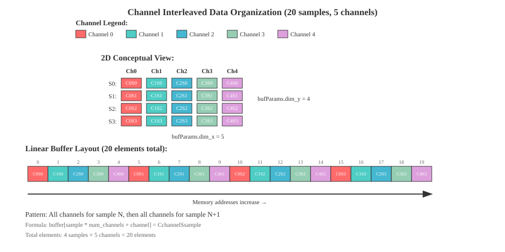
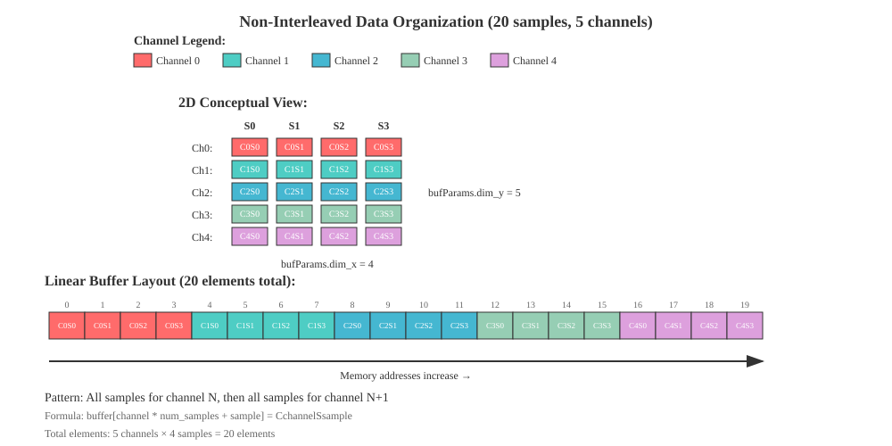

AUDIOLIB_ssrc¶
- group AUDIOLIB_ssrc
Synchronous Sample Rate Conversion (SSRC)
The SSRC kernel performs synchronous sample rate conversion of discrete input signals, converting audio data from one sample rate to another using fixed integer ratios. It is designed for high-performance, multi-channel audio processing and supports both interleaved and non-interleaved data formats.
Key Features:
Converts input audio streams from an input sample rate to a different output sample rate using fixed ratios (2:1, 4:1 or 1:2, 1:4).
Supports both channel interleaved and non-interleaved input data formats.
Handles multiple audio channels in a single kernel call.
Supports ping-pong buffer management in circular buffer mode AUDIOLIB_SSRC_BUFFER_FORMAT_PING_PONG_CIRCULAR or linear buffer management when buffer format is AUDIOLIB_SSRC_BUFFER_FORMAT_LINEAR.
Provides utility functions to calculate buffer sizes for input, state, coefficients and output data.
Implements efficient half band polyphase filtering for high-quality sample rate conversion.
Supports the use of MMA (Matrix Multiply Accelerator) unit for high-performance processing. Note:- Performance of the MMA unit can only be seen for larger input sample counts (block sizes) and multiple channels in the AUDIOLIB_SSRC_BUFFER_FORMAT_LINEAR buffer format.
For smaller input sample counts (block sizes) and channels counts AUDIOLIB_SSRC_BUFFER_FORMAT_PING_PONG_CIRCULAR buffer format provides the best performance.
Filters used in SSRC are designed for noise components to be lower than -140 dB.
Algorithm Overview:
Initialization: The kernel is initialized with user-specified parameters such as input/output sample rates, number of channels, enableMMA, data format and buffer format using AUDIOLIB_ssrc_InitArgs.
Buffer Preparation: The application allocates buffers based on the calculated sizes using utility functions like AUDIOLIB_ssrc_getOutBufferLength, AUDIOLIB_ssrc_getFilterLength, AUDIOLIB_ssrc_getCircularBufferParams, AUDIOLIB_ssrc_getLinearInputBufferSize, AUDIOLIB_ssrc_getStateBufferParams.
Configuration: The kernel is validated and configured using AUDIOLIB_ssrc_init_checkParams and AUDIOLIB_ssrc_init APIs.
Filter State Reset: The filter state is reset using AUDIOLIB_ssrc_set with AUDIOLIB_SSRC_MODE_RESET mode. After each AUDIOLIB_ssrc_init call, the SSRC state must be first reset using AUDIOLIB_ssrc_set before executing the conversion.
Execution: The main processing is performed by AUDIOLIB_ssrc_exec, which reads input samples, applies the sample rate conversion algorithm (using polyphase filtering and interpolation or decimation), and writes the converted output samples.
Output: The number of output samples generated is fixed and depends on the input and output sample rates. If the input data format is channel interleaved, the output samples will also be in interleaved format. If the input data format is non-interleaved, the output will be in non-interleaved format.
Performance Considerations:
Buffers should be allocated in L2 memory and aligned for optimal performance.
The kernel is primarily optimized for batch processing of multiple channels and large blocks of audio data.
There are special optimizations developed to get best performance with small blocks of data..
Usage Flow:
Determine optimal buffer format using
AUDIOLIB_ssrc_optimalBufferFormatbased on input/output sample rates, input sample count, number of channels, data format, and MMA enablement. This function returns the recommended buffer format (AUDIOLIB_SSRC_BUFFER_FORMAT_LINEAR or AUDIOLIB_SSRC_BUFFER_FORMAT_PING_PONG_CIRCULAR) for optimal performance based on the specific use case parameters. Note: running this function is not mandatory and it’s best that user trys both buffer formats and selects the one that works best for the specific use case.AUDIOLIB_ssrc_optimalBufferFormatis developed using prerecorded performance data which might be different for user’s application due to instruction cache behavior.Allocate memory to all required buffers and third party kernels used by SSRC kernel. Ex:- fir, 2d block copy.
Validate and Configure/Initialize parameters using AUDIOLIB_ssrc_init_checkParams and AUDIOLIB_ssrc_init.
Reset SSRC state using AUDIOLIB_ssrc_set’s AUDIOLIB_SSRC_MODE_RESET mode.
For each input block:
Execute conversion for each input block AUDIOLIB_ssrc_exec.
Retrieve output samples.
Input/Output Data Formats:
Interleaved Format:
Input: Channels are stored in a single array with samples for each channel interleaved.
The user has to manage the ping pong buffering when the data format is
AUDIOLIB_DATA_FORMAT_INTERLEAVEDand the buffer format is AUDIOLIB_SSRC_BUFFER_FORMAT_LINEAR.Ex: Maintain two pIn buffers. Once the execution is started on the first pIn buffer, the user can start filling the second pIn buffer with new data.
Once the execution is done on the first pIn buffer, submit the second pIn buffer to the execution function and the user can start filling the first pIn buffer with new data while the second pIn buffer is being processed.
If the user selects AUDIOLIB_SSRC_BUFFER_FORMAT_PING_PONG_CIRCULAR as the buffer format, the input buffer pIn should be used as the ping pong circular buffer. No need to allocate other pIn buffers.
The format of channel interleaved data is shown in the diagram below:

Non-Interleaved Format:
Input: Each channel has its samples first before the next channel’s samples.
Output: Same as input, with converted sample rates.
The format of non interleaved data is shown in the diagram below:

If the user is using AUDIOLIB_SSRC_BUFFER_FORMAT_PING_PONG_CIRCULAR buffer format, the user has to increment the write pointer for each input block and make sure to wrap around the buffer. If the input block is bigger than remaining buffer size, the input block should be broken into two blocks and first one has to be written to the end of the buffer and the second one should be written to the beginning of the buffer.
Other Considerations:
The user can utilize AUDIOLIB_ssrc_copyFilterCoeffs function to load the correct filter coefficients in to pFiltCoeffs buffer.
Filter coefficient header files are in the $AUDOLIB/src/AUDIOLIB_ssrc/filt_coeffs directory.
SSRC operates with fixed integer ratios (2:1 or 4:1) between input and output sample rates.
Unlike asynchronous sample rate conversion (ASRC), SSRC does not support variable ratios or continuous adjustment.
The conversion ratio is determined by the input and output sample rates specified during initialization.
Defines¶
-
AUDIOLIB_SSRC_MAX_NUM_CHANNELS¶
Max number of channels supported by the SSRC.
-
AUDIOLIB_SSRC_MODE_RESET¶
SSRC set function modes.
Enums¶
-
enum ssrc_sample_rate_t¶
Enum containing the allowed sample rates.
Values:
-
enumerator SSRC_SAMPLE_RATE_8000¶
-
enumerator SSRC_SAMPLE_RATE_11025¶
-
enumerator SSRC_SAMPLE_RATE_12000¶
-
enumerator SSRC_SAMPLE_RATE_16000¶
-
enumerator SSRC_SAMPLE_RATE_22050¶
-
enumerator SSRC_SAMPLE_RATE_24000¶
-
enumerator SSRC_SAMPLE_RATE_32000¶
-
enumerator SSRC_SAMPLE_RATE_44100¶
-
enumerator SSRC_SAMPLE_RATE_48000¶
-
enumerator SSRC_SAMPLE_RATE_64000¶
-
enumerator SSRC_SAMPLE_RATE_88200¶
-
enumerator SSRC_SAMPLE_RATE_96000¶
-
enumerator SSRC_SAMPLE_RATE_128000¶
-
enumerator SSRC_SAMPLE_RATE_176400¶
-
enumerator SSRC_SAMPLE_RATE_192000¶
-
enumerator SSRC_SAMPLE_RATE_8000¶
Functions¶
-
int32_t AUDIOLIB_ssrc_getHandleSize(AUDIOLIB_ssrc_InitArgs *pKerInitArgs)¶
Utility function to calculate the size of internal handle.
Remark
Application is expected to allocate buffer of the requested size and provide it as input to other functions requiring it.
- Parameters:¶
- AUDIOLIB_ssrc_InitArgs *pKerInitArgs¶
[in] : Pointer to structure holding init parameters
- Returns:¶
Size of the buffer in bytes
-
int32_t AUDIOLIB_ssrc_getOutBufferLength(ssrc_sample_rate_t inputSampleRate, ssrc_sample_rate_t outputSampleRate, uint32_t inputSampleCount)¶
Utility function to calculate the output buffer length based on input/output sample rates.
This function calculates the required output buffer length based on the input sample count and the ratio between input and output sample rates. For upsampling, the output length is ceil(input length * ratio). For downsampling, the output length is input length divided by the ratio (integer division).
Remark
Application is expected to allocate output buffer of sufficient size based on this calculation before making the AUDIOLIB_ssrc_exec function call.
- Parameters:¶
- ssrc_sample_rate_t inputSampleRate¶
[in] : Input sample rate
- ssrc_sample_rate_t outputSampleRate¶
[in] : Output sample rate
- uint32_t inputSampleCount¶
[in] : Number of input samples
- Returns:¶
Returns the required output buffer length in samples.
-
float AUDIOLIB_ssrc_getSampleRateRatio(ssrc_sample_rate_t inputSampleRate, ssrc_sample_rate_t outputSampleRate)¶
Calculates the sample rate conversion ratio between input and output sample rates.
This function calculates the ratio between input and output sample rates, handling both upsampling and downsampling cases. For upsampling, it returns outRate/inRate, and for downsampling, it returns inRate/outRate. The ratio is always positive and returned as a float.
- Parameters:¶
- ssrc_sample_rate_t inputSampleRate¶
[in] : Input sample rate enum
- ssrc_sample_rate_t outputSampleRate¶
[in] : Output sample rate enum
- Returns:¶
The sample rate conversion ratio as a float (typically 2 or 4)
-
bool AUDIOLIB_ssrc_isUpsampling(ssrc_sample_rate_t inputSampleRate, ssrc_sample_rate_t outputSampleRate)¶
Determines if the sample rate conversion is upsampling.
This function checks if the output sample rate is higher than the input sample rate, which indicates an upsampling operation.
- Parameters:¶
- ssrc_sample_rate_t inputSampleRate¶
[in] : Input sample rate enum
- ssrc_sample_rate_t outputSampleRate¶
[in] : Output sample rate enum
- Returns:¶
true (1) if upsampling, false (0) if downsampling or equal rates
-
AUDIOLIB_STATUS AUDIOLIB_ssrc_checkValidRatio(ssrc_sample_rate_t inputSampleRate, ssrc_sample_rate_t outputSampleRate)¶
Validates if the ratio between input and output sample rates is supported.
This function checks if the ratio between the input and output sample rates is either 2 or 4, which are the only ratios supported by SSRC. It returns AUDIOLIB_SUCCESS if the ratio is valid, or AUDIOLIB_ERR_INVALID_VALUE if the ratio is not supported.
Remark
Only ratios of 2 or 4 are supported for both upsampling and downsampling.
- Parameters:¶
- ssrc_sample_rate_t inputSampleRate¶
[in] : Input sample rate
- ssrc_sample_rate_t outputSampleRate¶
[in] : Output sample rate
- Returns:¶
Status value indicating success or failure. Refer to AUDIOLIB_STATUS.
AUDIOLIB_SUCCESS: The ratio is valid (2 or 4)
AUDIOLIB_ERR_INVALID_VALUE: The ratio is not supported
-
uint32_t AUDIOLIB_ssrc_getFilterLength(ssrc_sample_rate_t inputSampleRate, ssrc_sample_rate_t outputSampleRate, uint32_t stage)¶
Retrieves the filter length used in audio sample rate conversion based on sample rates and stage.
This function returns the appropriate filter length value used in the audio sample rate conversion process based on the input and output sample rates and the specific stage. This function internally calculates the required number of stages for sample rate conversion. If the user request the 2nd stage filter length for a 1 stage filtering operation, the function will return 0.
Remark
This value is used for memory allocation of filter coefficient buffers and copying of filter coefficients. It represents the number of filter taps used in the polyphase filtering implementation of the SSRC algorithm. Different sample rate combinations and stages may require different filter lengths for optimal audio quality and performance.
- Parameters:¶
- ssrc_sample_rate_t inputSampleRate¶
[in] : Input sample rate enum
- ssrc_sample_rate_t outputSampleRate¶
[in] : Output sample rate enum
- uint32_t stage¶
[in] : The specific stage (1 or 2) for which to get the filter length
- Returns:¶
uint32_t The filter length determined by the sample rate combination and stage.
-
uint32_t AUDIOLIB_ssrc_getSampleHistoryLength(ssrc_sample_rate_t inputSampleRate, ssrc_sample_rate_t outputSampleRate, uint32_t stage)¶
Retrieves the sample history length used in synchronous sample rate conversion based on sample rates and stage.
This function returns the appropriate historical sample count used in the synchronous sample rate conversion process based on the input and output sample rates and the specific stage. This function internally calculates the required number of stages for sample rate conversion. If the user requests the 2nd stage history length for a 1-stage filtering operation, the function will return 0.
Remark
This value is used for memory allocation of input buffer and internal state buffer. It represents the number of samples stored as history for use in the polyphase filtering implementation of the SSRC algorithm. Different sample rate combinations and stages may require different history lengths for optimal audio quality and performance. For 2:1 conversion ratios, only stage 1 history is used. For 4:1 conversion ratios, both stage 1 and stage 2 history are used in a cascaded manner.
- Parameters:¶
- ssrc_sample_rate_t inputSampleRate¶
[in] : Input sample rate enum
- ssrc_sample_rate_t outputSampleRate¶
[in] : Output sample rate enum
- uint32_t stage¶
[in] : The specific stage (1 or 2) for which to get the sample count history
- Returns:¶
uint32_t The sample history length determined by the sample rate combination and stage.
-
int32_t AUDIOLIB_ssrc_getFilterCoeffSize(ssrc_sample_rate_t inputSampleRate, ssrc_sample_rate_t outputSampleRate, AUDIOLIB_ssrc_buffer_format_t bufferFormat, uint32_t sampleDataType)¶
Utility function to get the size of filter coefficients buffer.
This function calculates the required size of the filter coefficients buffer based on the input parameters. The size depends on the sample rates, buffer format, and whether MMA is enabled. For 2:1 conversion ratios, only stage 1 filter coefficients are needed. For 4:1 conversion ratios, both stage 1 and stage 2 filter coefficients are needed.
Remark
Application is expected to allocate a filter coefficients buffer of the requested size and provide it as input to the AUDIOLIB_ssrc_exec function. The filter coefficients can be copied to this buffer using AUDIOLIB_ssrc_copyFilterCoeffs.
- Parameters:¶
- ssrc_sample_rate_t inputSampleRate¶
[in] : Input sample rate
- ssrc_sample_rate_t outputSampleRate¶
[in] : Output sample rate
- AUDIOLIB_ssrc_buffer_format_t bufferFormat¶
[in] : Buffer format – AUDIOLIB_SSRC_BUFFER_FORMAT_LINEAR or AUDIOLIB_SSRC_BUFFER_FORMAT_PING_PONG_CIRCULAR
- uint32_t sampleDataType¶
[in] : Data type of the samples (e.g., AUDIOLIB_FLOAT32)
- Returns:¶
Size of the filter coefficients buffer in bytes
-
AUDIOLIB_STATUS AUDIOLIB_ssrc_copyFilterCoeffs(ssrc_sample_rate_t inputSampleRate, ssrc_sample_rate_t outputSampleRate, AUDIOLIB_ssrc_buffer_format_t bufferFormat, uint32_t sampleDataType, const float *downsampleStage1, const float *downsampleStage2, const float *upsampleStage1, const float *upsampleStage2, int32_t filterCoeffSizeInBytes, void *pFiltCoeffs)¶
Utility function to copy filter coefficients to a user-provided buffer.
This function copies the appropriate filter coefficients based on the input/output sample rates and whether it’s upsampling or downsampling. It first zeros out the destination buffer and then copies the coefficients from the provided arrays. For 2:1 conversion ratios, only stage 1 filter coefficients are copied. For 4:1 conversion ratios, both stage 1 and stage 2 filter coefficients are copied. If any pointer argument is NULL, the function returns AUDIOLIB_ERR_NULL_POINTER.
Remark
Application is expected to allocate a filter coefficients buffer of the requested size using AUDIOLIB_ssrc_getFilterCoeffSize before calling this function. The filter coefficients are organized in memory based on the buffer format and MMA settings. For MMA-enabled linear buffers, additional padding is added for alignment.
- Parameters:¶
- ssrc_sample_rate_t inputSampleRate¶
[in] : Input sample rate
- ssrc_sample_rate_t outputSampleRate¶
[in] : Output sample rate
- AUDIOLIB_ssrc_buffer_format_t bufferFormat¶
[in] : Buffer format – AUDIOLIB_SSRC_BUFFER_FORMAT_LINEAR or AUDIOLIB_SSRC_BUFFER_FORMAT_PING_PONG_CIRCULAR
- uint32_t sampleDataType¶
[in] : Data type of the samples (e.g., AUDIOLIB_FLOAT32)
- const float *downsampleStage1¶
[in] : Pointer to the downsampling stage 1 filter coefficients
- const float *downsampleStage2¶
[in] : Pointer to the downsampling stage 2 filter coefficients
- const float *upsampleStage1¶
[in] : Pointer to the upsampling stage 1 filter coefficients
- const float *upsampleStage2¶
[in] : Pointer to the upsampling stage 2 filter coefficients
- int32_t filterCoeffSizeInBytes¶
[in] : Size of the filter coefficients buffer in bytes
- void *pFiltCoeffs¶
[out] : Pointer to the destination buffer where coefficients will be copied
- Returns:¶
Status value indicating success or failure. Refer to AUDIOLIB_STATUS.
AUDIOLIB_SUCCESS: Coefficients copied successfully
AUDIOLIB_ERR_NULL_POINTER: One or more pointer arguments are NULL
-
uint32_t AUDIOLIB_ssrc_getNextPowerOf2(uint32_t value)¶
Utility function to promote a value to the next power of 2.
This function takes an integer value and returns the next power of 2 that is greater than or equal to the input value. For example, if the input is 100, the output will be 128. If the input is already a power of 2, the same value is returned. If the input is 0, the function returns 1.
Remark
This function uses bit manipulation to efficiently find the next power of 2. It’s useful for ensuring proper alignment and optimizing memory access patterns, particularly for circular buffer allocation where buffer sizes must be powers of 2.
-
uint32_t AUDIOLIB_ssrc_convertSampleRateToInt(ssrc_sample_rate_t rate)¶
Converts an enum sample rate to an integer sample rate.
- Parameters:¶
- ssrc_sample_rate_t rate¶
[in] The enum sample rate to convert.
- Returns:¶
The integer sample rate, or 0 if the enum value is invalid.
-
AUDIOLIB_STATUS AUDIOLIB_ssrc_getCircularBufferParams(ssrc_sample_rate_t inputSampleRate, ssrc_sample_rate_t outputSampleRate, uint32_t inputSampleCount, uint8_t numChannels, uint32_t sampleDataType, AUDIOLIB_ssrc_bufferParams_t *pBufferParams)¶
Utility function to calculate the circular buffer parameters.
This function calculates the required buffer size, alignment, and stride for circular buffer mode based on , input/output sample rates, and other parameters. Data format supported
AUDIOLIB_DATA_FORMAT_INTERLEAVEDONLY- Parameters:¶
- ssrc_sample_rate_t inputSampleRate¶
[in] : Input sample rate
- ssrc_sample_rate_t outputSampleRate¶
[in] : Output sample rate
- uint32_t inputSampleCount¶
[in] : Number of input samples
- uint8_t numChannels¶
[in] : Number of audio channels
- uint32_t sampleDataType¶
[in] : Sample data type (e.g., AUDIOLIB_FLOAT32)
- AUDIOLIB_ssrc_bufferParams_t *pBufferParams¶
[out] : Pointer to store the calculated buffer parameters (size, alignment, stride)
- Returns:¶
AUDIOLIB_STATUS indicating success or failure
-
AUDIOLIB_STATUS AUDIOLIB_ssrc_getStateBufferParams(ssrc_sample_rate_t inputSampleRate, ssrc_sample_rate_t outputSampleRate, uint32_t inputSampleCount, uint8_t numChannels, uint32_t sampleDataType, uint8_t dataFormat, AUDIOLIB_ssrc_bufferParams_t *pBufferParams)¶
Utility function to calculate the size of the state buffer.
This function calculates the required size of the state buffer based on the input parameters. Only intended to use when the buffer format is AUDIOLIB_SSRC_BUFFER_FORMAT_LINEAR
Remark
Application is expected to allocate a state buffer of the requested size and provide it as input to the AUDIOLIB_ssrc_set and AUDIOLIB_ssrc_exec functions when using linear buffer format.
- Parameters:¶
- ssrc_sample_rate_t inputSampleRate¶
[in] : Input sample rate
- ssrc_sample_rate_t outputSampleRate¶
[in] : Output sample rate
- uint32_t inputSampleCount¶
[in] : Number of input samples
- uint8_t numChannels¶
[in] : Number of audio channels
- uint32_t sampleDataType¶
[in] : Data type of the samples (e.g., AUDIOLIB_FLOAT32)
- uint8_t dataFormat¶
[in] : Data format –
AUDIOLIB_DATA_FORMAT_INTERLEAVED= 1 orAUDIOLIB_DATA_FORMAT_NON_INTERLEAVED= 0.- AUDIOLIB_ssrc_bufferParams_t *pBufferParams¶
[out] : Pointer to store the calculated buffer parameters (size, alignment, stride)
- Returns:¶
Size of the state buffer in bytes
-
uint32_t AUDIOLIB_ssrc_getLinearInputBufferSize(ssrc_sample_rate_t inputSampleRate, ssrc_sample_rate_t outputSampleRate, uint32_t inputSampleCount, uint8_t numChannels, uint32_t sampleDataType, uint8_t dataFormat)¶
Utility function to calculate the size of the linear input buffer.
This function calculates the required size of the input buffer based on the input parameters and data format. For interleaved format, it uses matrix transpose row stride calculation to ensure proper alignment for vector operations. This utility function should only be used for linear buffer format ONLY. For circular buffers use
AUDIOLIB_ssrc_getCircularBufferParamsRemark
Application is expected to allocate an input buffer of the requested size and provide it as input to the AUDIOLIB_ssrc_set and AUDIOLIB_ssrc_exec functions.
- Parameters:¶
- ssrc_sample_rate_t inputSampleRate¶
[in] : Input sample rate
- ssrc_sample_rate_t outputSampleRate¶
[in] : Output sample rate
- uint32_t inputSampleCount¶
[in] : Number of input samples
- uint8_t numChannels¶
[in] : Number of audio channels
- uint32_t sampleDataType¶
[in] : Data type of the samples (e.g., AUDIOLIB_FLOAT32)
- uint8_t dataFormat¶
[in] : Data format –
AUDIOLIB_DATA_FORMAT_INTERLEAVED= 1 orAUDIOLIB_DATA_FORMAT_NON_INTERLEAVED= 0.
- Returns:¶
Size of the input buffer in bytes
-
AUDIOLIB_STATUS AUDIOLIB_ssrc_init(AUDIOLIB_kernelHandle handle, AUDIOLIB_bufParams2D_t *bufParamsIn, AUDIOLIB_bufParams2D_t *bufParamsOut, AUDIOLIB_ssrc_InitArgs *pKerInitArgs)¶
This function should be called before the AUDIOLIB_ssrc_exec function is called. This function takes care of any one-time operations such as setting up the configuration of required hardware resources such as the MMA accelerator and the streaming engine. The results of these operations are stored in the handle.
Remark
Application is expected to provide a valid handle.
- Parameters:¶
- AUDIOLIB_kernelHandle handle¶
[in] : Active handle to the kernel
- AUDIOLIB_bufParams2D_t *bufParamsIn¶
[in] : Pointer to the structure containing dimensional information of input buffer
- AUDIOLIB_bufParams2D_t *bufParamsOut¶
[out] : Pointer to the structure containing dimensional information of ouput buffer
- AUDIOLIB_ssrc_InitArgs *pKerInitArgs¶
[in] : Pointer to the structure holding init parameters
- Returns:¶
Status value indicating success or failure. Refer to AUDIOLIB_STATUS.
-
AUDIOLIB_STATUS AUDIOLIB_ssrc_init_checkParams(AUDIOLIB_kernelHandle handle, const AUDIOLIB_bufParams2D_t *bufParamsIn, const AUDIOLIB_bufParams2D_t *bufParamsOut, const AUDIOLIB_ssrc_InitArgs *pKerInitArgs)¶
This function checks the validity of the parameters passed to AUDIOLIB_ssrc_init function. This function is called with the same parameters as the AUDIOLIB_ssrc_init, and this function must be called before the AUDIOLIB_ssrc_init is called.
Remark
None
- Parameters:¶
- AUDIOLIB_kernelHandle handle¶
[in] : Active handle to the kernel
- const AUDIOLIB_bufParams2D_t *bufParamsIn¶
[in] : Pointer to the structure containing dimensional information of input buffer
- const AUDIOLIB_bufParams2D_t *bufParamsOut¶
[out] : Pointer to the structure containing dimensional information of ouput buffer
- const AUDIOLIB_ssrc_InitArgs *pKerInitArgs¶
[in] : Pointer to the structure holding init parameters
- Returns:¶
Status value indicating success or failure. Refer to AUDIOLIB_STATUS.
-
AUDIOLIB_STATUS AUDIOLIB_ssrc_set(AUDIOLIB_kernelHandle handle, uint8_t mode, void *pIn, void *pState)¶
This function resets the filter state when used with AUDIOLIB_SSRC_MODE_RESET.
Please refer to details under AUDIOLIB_ssrc
Remark
Before calling this function, application is expected to call AUDIOLIB_ssrc_init_checkParams and AUDIOLIB_ssrc_init functions. This ensures resource configuration and error checks are done only once for several invocations of this function. This function MUST be called ONCE with mode = AUDIOLIB_SSRC_MODE_RESET before calling AUDIOLIB_ssrc_exec
- Assumptions:
The kernel handle must be active and valid
pIn must not be NULL when mode is AUDIOLIB_SSRC_MODE_RESET.
When the input data format is
AUDIOLIB_DATA_FORMAT_INTERLEAVED, and the if buffer format is AUDIOLIB_SSRC_BUFFER_FORMAT_PING_PONG_CIRCULAR, pIn must be aligned to the size recommended by the AUDIOLIB_ssrc_getCircularBufferParams function.If this alignment is not set properly streaming engine circular buffer will not work and the algorithm will break!!!
When the input data format is
AUDIOLIB_DATA_FORMAT_NON_INTERLEAVED, pIn must be aligned to the size of 64-bytes.
- Performance Considerations:
For best performance,
The pIn buffer is expected to be in L2 memory
- Parameters:¶
- AUDIOLIB_kernelHandle handle¶
[in] : Active handle to the kernel
- uint8_t mode¶
[in] : Operation mode
AUDIOLIB_SSRC_MODE_RESET Resets the filter state
- void *pIn¶
[in] : Pointer to buffer holding the input data.
- void *pState¶
[in] : Pointer to buffer holding the state data.
- Returns:¶
Status value indicating success or failure. Refer to AUDIOLIB_STATUS.
-
AUDIOLIB_STATUS AUDIOLIB_ssrc_exec(AUDIOLIB_kernelHandle handle, void *pIn, void *pState, void *pFiltCoeffs, void *pOut)¶
This function is the main kernel compute function that performs the synchronous sample rate conversion.
This function performs the actual sample rate conversion using polyphase filtering techniques. For 2:1 conversion ratios, a single-stage filtering process is used. For 4:1 conversion ratios, a two-stage cascaded filtering process is used. The function handles both upsampling and downsampling operations based on the input and output sample rates specified during initialization. Please refer to details under AUDIOLIB_ssrc for more information.
Remark
Before calling this function, application is expected to call AUDIOLIB_ssrc_init, AUDIOLIB_ssrc_set in AUDIOLIB_SSRC_MODE_RESET mode and AUDIOLIB_ssrc_exec_checkParams functions. This ensures resource configuration and error checks are done only once for several invocations of this function.
- Assumptions:
Memory pointed by pIn, pOut shall NOT be shared. Library code is using the restrict keyword to optimize the kernel. So any of these pointer should not point to the same memory region at any time.
When the input data format is
AUDIOLIB_DATA_FORMAT_INTERLEAVED, and the if buffer format is AUDIOLIB_SSRC_BUFFER_FORMAT_PING_PONG_CIRCULAR, pIn must be aligned to the size recommended by the AUDIOLIB_ssrc_getCircularBufferParams function.If this alignment is not set properly streaming engine circular buffer will not work and the algorithm will break!!!
When the input data format is
AUDIOLIB_DATA_FORMAT_NON_INTERLEAVED, and the if buffer format is AUDIOLIB_SSRC_BUFFER_FORMAT_LINEAR, pIn must be aligned to the size of 64-bytes.When the input data format is
AUDIOLIB_DATA_FORMAT_NON_INTERLEAVED, pIn must be aligned to the size of 64-bytes.
- Performance Considerations:
For best performance,
The input, output and intermediate data buffers are expected to be in L2 memory
The buffer pointers are assumed to be 64-byte aligned unless it’s a circular buffer which needs special alignment.
- Parameters:¶
- AUDIOLIB_kernelHandle handle¶
[in] : Active handle to the kernel
- void *pIn¶
[in] : Pointer to buffer holding the input data
- void *pState¶
[in] : Pointer to buffer holding the state data (required for linear buffer format, can be NULL for circular buffer format)
- void *pFiltCoeffs¶
[in] : Pointer to buffer holding filter coefficients
- void *pOut¶
[out] : Pointer to buffer holding the output data
- Returns:¶
Status value indicating success or failure. Refer to AUDIOLIB_STATUS.
-
AUDIOLIB_STATUS AUDIOLIB_ssrc_exec_checkParams(AUDIOLIB_kernelHandle handle, const void *pIn, const void *pState, const void *pFiltCoeffs, const void *pOut)¶
Checks the validity of parameters for SSRC execution.
This function validates the pointers and buffer requirements before executing the SSRC kernel. It checks for NULL pointers for the kernel handle, input, output, and filter coefficients buffers. For linear buffer format, it also checks that the state buffer pointer is not NULL.
Remark
This function should be called before AUDIOLIB_ssrc_exec to ensure all required buffers are properly allocated and valid for the selected buffer format.
- Parameters:¶
- AUDIOLIB_kernelHandle handle¶
[in] Active handle to the SSRC kernel
- const void *pIn¶
[in] Pointer to input buffer
- const void *pState¶
[in] Pointer to state buffer (required for linear buffer format)
- const void *pFiltCoeffs¶
[in] Pointer to filter coefficients buffer
- const void *pOut¶
[in] Pointer to output buffer
- Returns:¶
Status value indicating success or failure. Refer to AUDIOLIB_STATUS.
AUDIOLIB_SUCCESS: All parameters are valid
AUDIOLIB_ERR_NULL_POINTER: One or more required pointers are NULL
-
void AUDIOLIB_ssrc_perfEst(AUDIOLIB_kernelHandle handle, const AUDIOLIB_bufParams2D_t *bufParamsIn, const AUDIOLIB_bufParams2D_t *bufParamsOut, uint64_t *archCycles, uint64_t *estCycles)¶
This is a utility function that gives an estimate of the cycles consumed for the kernel execution.
Remark
None
- Parameters:¶
- AUDIOLIB_kernelHandle handle¶
[in] : Active handle to the kernel
- const AUDIOLIB_bufParams2D_t *bufParamsIn¶
[in] : Pointer to the structure containing dimensional information of the input buffer
- const AUDIOLIB_bufParams2D_t *bufParamsOut¶
[in] : Pointer to the structure containing dimensional information of the output buffer
- uint64_t *archCycles¶
[out] : Cycles estimated for the compute, startup and teardown
- uint64_t *estCycles¶
[out] : Cycles estimated for the compute, startup, teardown and any associated overhead
-
struct AUDIOLIB_ssrc_bufferParams_t¶
- #include <AUDIOLIB_ssrc.h>
Structure containing buffer parameters.
-
struct AUDIOLIB_ssrc_InitArgs¶
- #include <AUDIOLIB_ssrc.h>
Structure containing the parameters to initialize the kernel.
Public Members¶
-
int8_t funcStyle¶
Variant of the function refer to AUDIOLIB_FUNCTION_STYLE
-
uint32_t inputSampleCount¶
Max number of ssrc input samples requested by the user per data block. This is necessary to allocate the in/out buffer sizes. User cannot send more data than this value in a single call to exec function.
-
uint32_t sampleDataType¶
Ssrc input sample’s data type. Only float type is supported.
-
ssrc_sample_rate_t inputSampleRate¶
input sample rate set by the user. Allowed values are 8k, 11.025k, 12k, 16k, 22.05k, 24k, 32k, 44.1k, 48k, 64k, 88.2k, 96k, 128k, 176.4k, 192k Hz
-
ssrc_sample_rate_t outputSampleRate¶
output sample rate set by the user. Allowed values are 8k, 11.025k, 12k, 16k, 22.05k, 24k, 32k, 44.1k, 48k, 64k, 88.2k, 96k, 128k, 176.4k, 192k Hz
-
uint8_t numChannels¶
number of ssrc channels requested by the user.
-
uint8_t dataFormat¶
data format of the input samples. This could either be
AUDIOLIB_DATA_FORMAT_INTERLEAVED= 1 orAUDIOLIB_DATA_FORMAT_NON_INTERLEAVED= 0.
-
AUDIOLIB_ssrc_buffer_format_t bufferFormat¶
Buffer format needed for optimal performance when the data format is
AUDIOLIB_DATA_FORMAT_INTERLEAVED. This could either be AUDIOLIB_SSRC_BUFFER_FORMAT_LINEAR or AUDIOLIB_SSRC_BUFFER_FORMAT_PING_PONG_CIRCULAR. When the data format isAUDIOLIB_DATA_FORMAT_NON_INTERLEAVEDthe bufferFormat should be ONLY be AUDIOLIB_SSRC_BUFFER_FORMAT_LINEAR.
-
int8_t funcStyle¶